Panduan Mempelajari Modul
Pada panduan ini terdapat 2 langkah yang harus diikuti untuk mempelajari Modul
A.Membuat Akun
B.Mulai Belajar
C.Masuk Kembali ke Modul
A. Membuat Akun
Dalam proses pembuatan akun, Anda harus memperhatikan alamat email Anda. Alamat email yang Anda gunakan saat membuat akun harus sama dengan alamat email yang didaftarkan oleh perguruan tinggi Anda saat mendaftar pada Pendaftaran Program Kemdiktisaintek Tendik Berdampak: Penguatan Kompetensi dan Profesionalisme. Berikut ini langkah-langkah membuat akun:
1. Klik Url berikut Go to Modul. Kemudian Anda akan diarahkan ke halaman baru seperti gambar dibawah ini (Gambar1)
Gambar1
2. Klik tombol Log In (Gambar 2).
Gambar 2
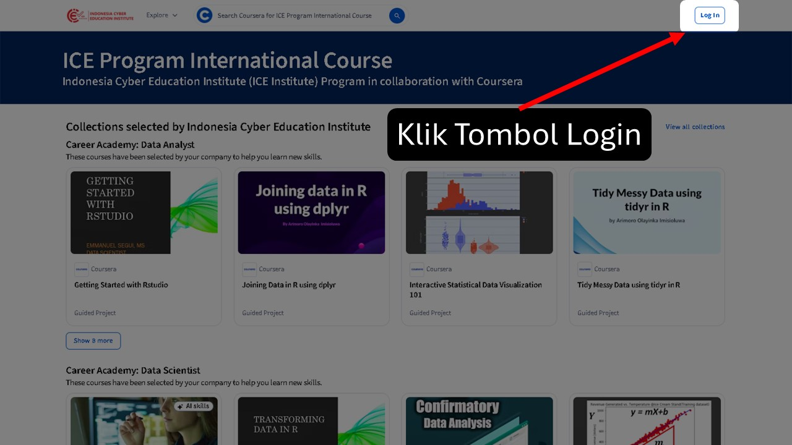
Kemudian akan muncul tampilan seperti di bawah ini.. (Gambar 3)
Gambar 3
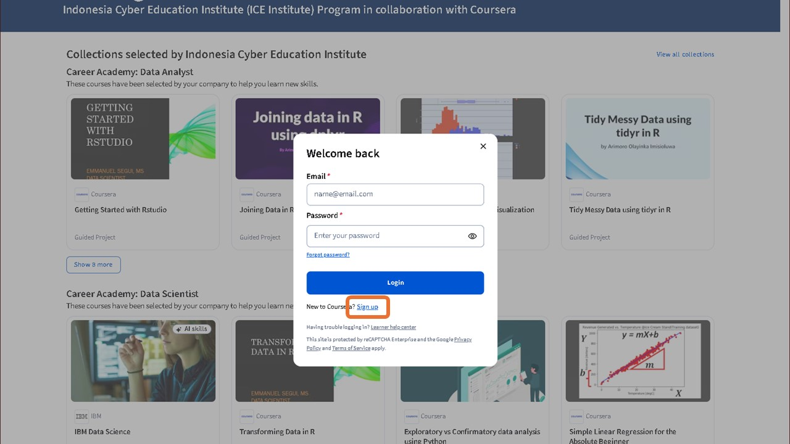
3. Pilih Menu Sign Up, dan isi data anda. Lalu klik tombol join for free seperti di bawah ini.. (Gambar 3.1)
Gambar 3.1.Sign Up
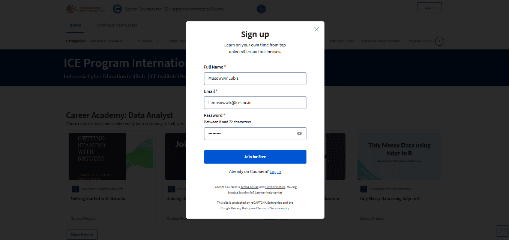
Catatan : Alamat email yang Anda gunakan pada Kolom Email, harus sama dengan alamat email yang didaftarkan oleh Peguruan Tinggi Anda saat mendaftar pada Pendaftaran Program Kemdiktisaintek Tendik Berdampak: Penguatan Kompetensi dan Profesionalisme
4. Anda akan diperlihatkan halaman untuk mengaktifkan akun Anda dengan mengonfirmasi alamat email Anda seperti yang ditunjukkan pada gambar di bawah ini (Gambar 4)
Gambar 4.Verifiy Email
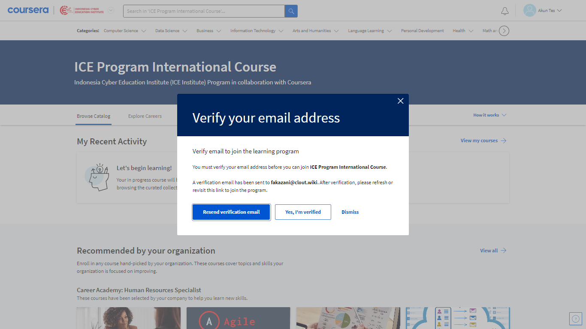
5. Selanjutnya Anda harus mengaktifkan akun yang baru saja Anda buat dengan membuka email Anda dan melihat pesan baru seperti gambar di bawah ini (Gambar 5)
Gambar 5.Email Confirmation
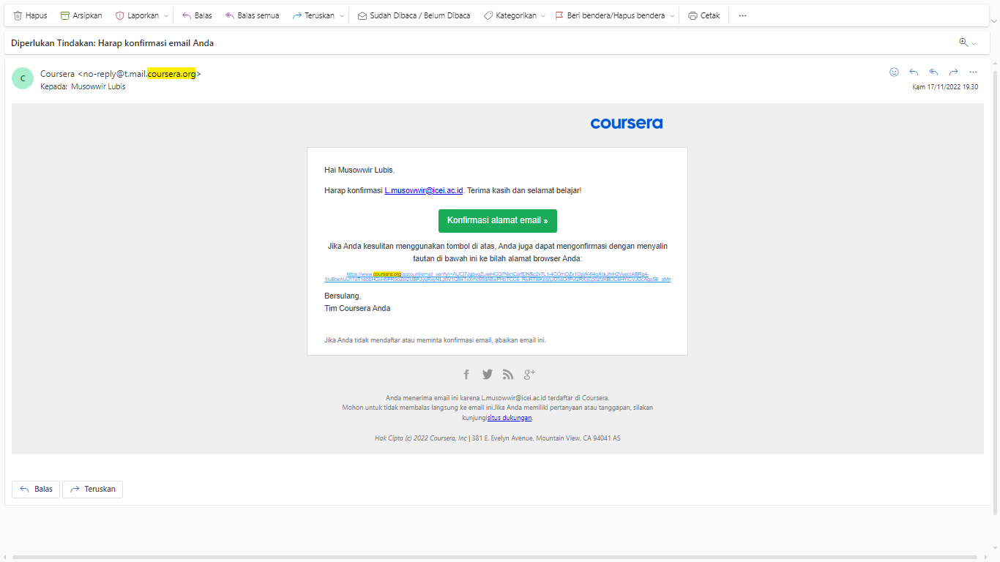
5. Klik tombol Konfirmasikan email saya untuk melanjutkan proses aktivasi akun. Setelah berhasil, Anda akan diperlihatkan gambar seperti di bawah ini (Gambar 6)
Gambar 6.Confirmation Success
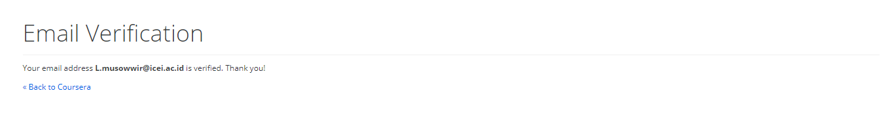
B. Mulai Belajar
Pada tahap ini, Anda dapat mulai mempelajari Modul.
Pastikan Anda telah membuat akun. Jika belum, Anda dapat kembali ke tahap ini A. Buat Akun.
Langkah-langkah untuk memulai belajar:
PERHATIAN ANDA AKAN MENERIMA EMAIL DARI ICE INSTITUTE YANG BERISI 2 LINK.
- LINK JOIN
- LINK AKSES MODUL
PASTIKAN ANDA MENGECEK FOLDER INBOX, JUNK, SPAM, PROMOSI PADA EMAIL ANDA
Baca dan pahami Panduan dibawa ini dengan seksama dan teliti agar anda sukses mengakses Modul
1. Klik LINK JOIN yang diberikan melalui email Anda, hingga terbuka halaman join program seperti gambar dibawa ini (Gambar 7).
Gambar 7
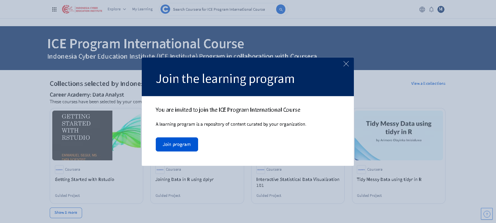
2. Klik tombol Log In. Kemudian akan muncul tampilan seperti di bawah ini.. (Gambar 9)
Gambar 9
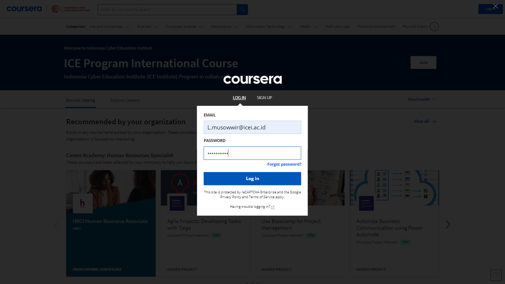
3. Masukkan Email and Password anda yang telah berhasil anda buat sebelumnya, lalu klik tombol Log In
4. Saat melihat tampilan Join the learning program, klik Tombol Join untuk konfirmasi seperti gambar dibawa ini (Gambar 10)
Gambar 10
11. Setelah berhasil lalu kembali lagi ke Email Anda dan Klik LINK AKSES MODUL, hingga terbuka halaman modul anda seperti gambar dibawa ini (Gambar 11)
Gambar 11
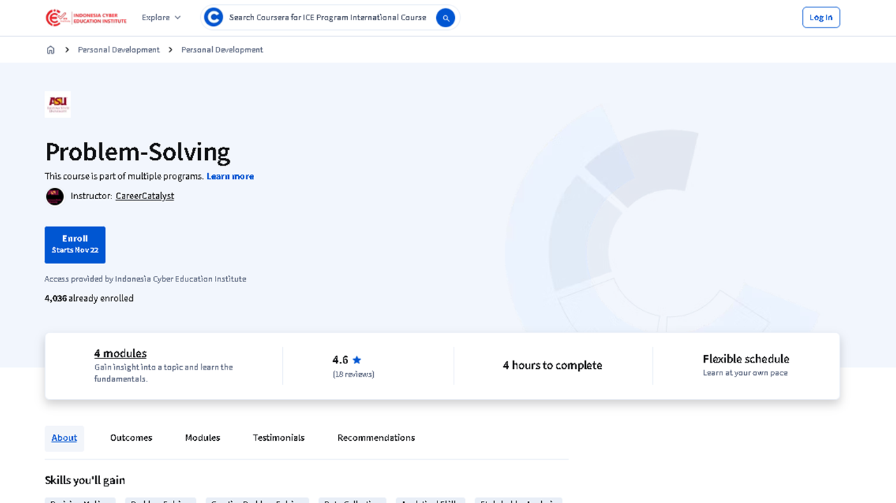
12 Klik tombol Enroll. maka Anda akan langsung diarahkan masuk sedalam Modul Anda seperti gambar dibawah ini. (Gambar 12)
Gambar 12
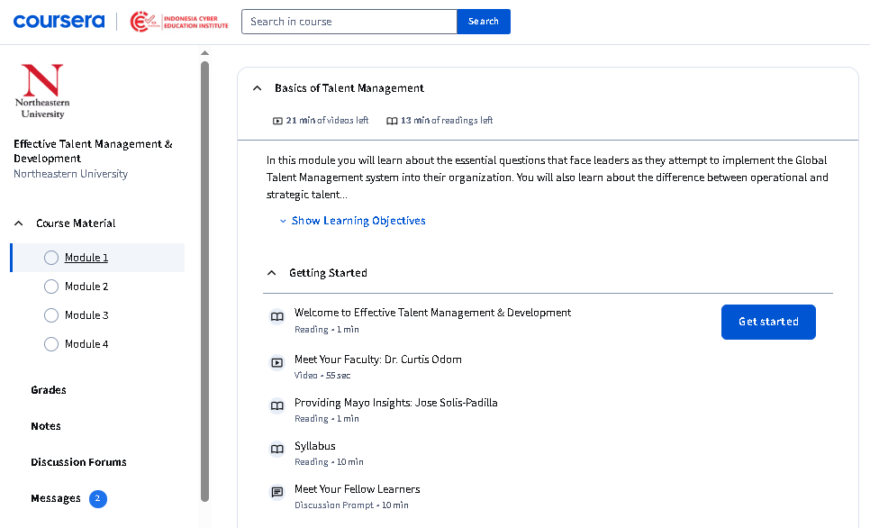
13. Klik Tombol Get Started untuk memulai pembelajaran Modul
Catatan :
- Anda harus menyelesaikan Modul Anda tepat waktu hingga mendapatkan sertifikat
- Menu Grade yang berada disebelah kiri pada halaman Modul merupakan informasi Assigment yang harus Anda kerjakan di Modul tersebut
- Menu Course Infor yang berada disebelah kiri pada halaman Modul merupakan informasi dari Modul Anda
-
Saat Anda berhasil menyelesaikan Modul, Anda akan melihat tampilan seperti gambar dibawa ini

- Klik tombol Verify my name untuk melakukan Verifikasi Nama Anda.
-
Pada halaman Verifikasi Nama, Isi nama Lengkap Anda. Lalu Klil Check List. dan setelah memastikan Nama
Anda sesuai klik Tombol Submit. seperti gambar dibawa ini
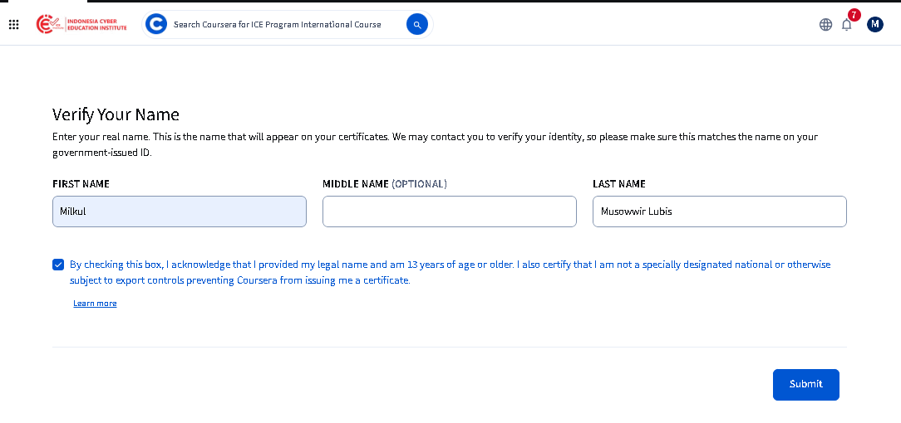 -
Setelah berhasil Klik Menu Accomplisment yang berada di sudut kanan Atas. atau Klik Link berikut. Untuk mengakses sertifikat Anda. dan Anda akan di perlihatkan Halaman Sertifikat Anda seperti gambar dibawa ini
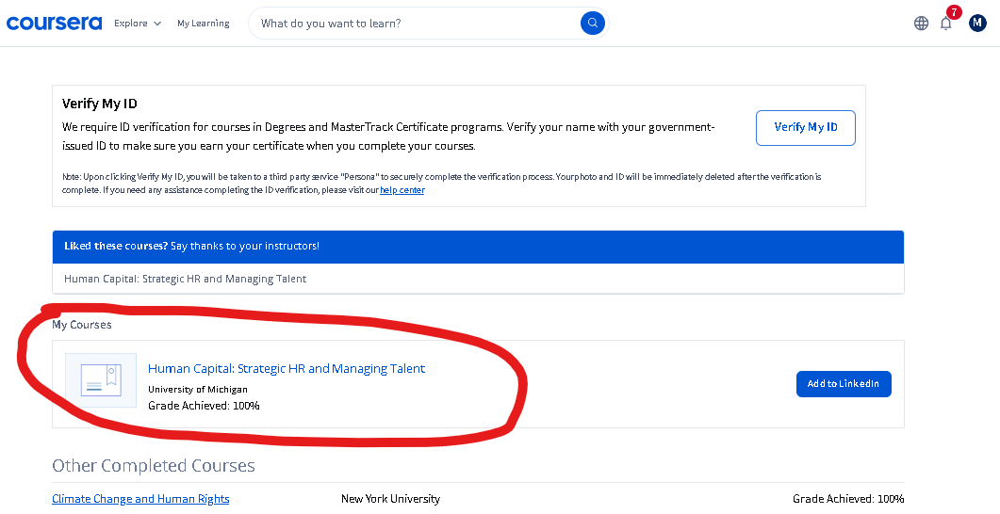